第５編 契約総論
第３章 契約の解除
第１節 債務不履行
Ⅰ 履行遅滞
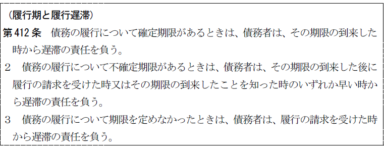
：履行が可能であるのに、履行期までに履行されないこと
①履行可能性、②履行期の徒過③、履行遅滞に陥ったことが違法なこと、が必要である。
1. 履行可能性〔要件①）
履行が不可能となれば、履行不能の問題となる。
2. 履行期の徒過〔要件②〕
(1) 確定期限付債務（412条１項）
(a) 原則として期限が到来すれば当然に遅滞となり、債権者の側から催告する必要はない。
(b) 例外
① 同時履行の抗弁権、留置権が付いている場合は、債権者からの履行の提供がない限り遅滞とならない（大判大６.４.19）。両当事者が共に弁済の提供をしないときは、いずれも遅滞とならず、両債務はそれ以後期限の定めのない債務となる（大判大13.５.27）。
② 取立債務・登記移転義務のように履行に債権者の協力を必要とする債務については、債権者が必要な協力をした上で催告をしなければならない（大判昭５.４.19）。
(2) 不確定期限付債務（412条２項）
不確定期限付債務とは、到来することは確実だが、いつ到来するか不確定な期限のある債務をいう（例えば、甲が死亡したら支払うという場合）。この場合、債務者が期限が到来した後に履行の請求を受けた時又はその期限の到来したことを知った時のいずれか早い時から遅滞となる。
(3) 期限の定めのない債務（412条３項）
(a) 原則
債務発生と同時に履行期が到来し、債権者は履行の請求ができる。そして、債務者がこの請求を受けた時から遅滞となる。
(b) 例外
ⅰ 期限の定めのない消費貸借は、催告に「相当の期間」を定めなければならず（591条１項）、その期間経過後に遅滞となる（相当の期間を定めないときも相当の期間経過後に遅滞となる）。
ⅱ 不法行為による損害賠償債務は、損害発生と同時に遅滞となる（最判昭37.９.４）。
(4) 停止条件付債務
停止条件付債務は条件成就後、債権者が履行を請求した時から遅滞となる。
【消滅時効の起算点と遅滞を生ずる時期】
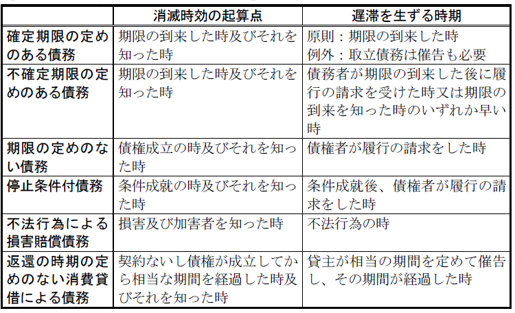
(5) 帰責事由の挙証責任
帰責事由の挙証責任は、債務者にある（大判大14.２.27、415条１項ただし書）。債務者は、履行の遅延が自己の側の落ち度によるものでないことを証明しない限り、履行遅滞の責任を免れることはできない。
3. 履行遅滞に陥ったことが違法なこと〔要件③〕
債務者に同時履行の抗弁権（533条）、留置権（295条）など履行遅延を正当化するような事由のある場合には、履行遅滞の責任は生じない（通説）。
1. 本来的給付の追及（現実的履行の強制）
履行遅滞となっても債権者は依然として本来的給付の請求ができ、履行の強制が可能である。
なお、本来的給付の追及には債務者の帰責事由は不要である。
2. 損害賠償請求（415条）
損害賠償請求には、債務者の帰責事由が必要である。
3. 契約の解除
相当の期間を定めて催告し、履行されない場合は解除できる（541条本文）。
Ⅱ 履行不能
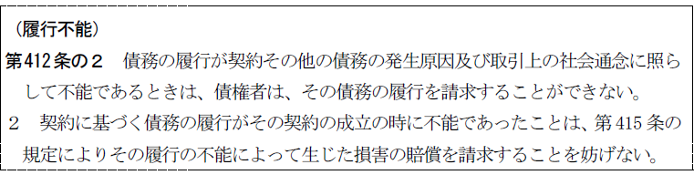
：債務の履行が契約その他の債務の発生原因及び取引上の社会通念に照らして不能であること
①履行が不能であること、②不能の原因が違法であること、が必要である。
1. 履行が不能であること（要件①）
民法412条の２第２項は、原始的不能の契約も有効に成立することを前提として、履行不能の場合には、履行不能を理由とする損害賠償請求をすることができる旨を規定するものである。本条は履行不能を理由とする契約の解除を否定するものではない。
不動産の二重売買の場合にも、原則として第三者に移転登記がなされた時に、売主の債務は法律的不能になるので、履行不能となる（最判昭35.４.21）。
2. 不能の原因が違法であること
理論上当然のことであるが、実際上、適用される場面は少ないであろう。
1. 損害賠償請求権の発生
債務者の帰責事由が必要である。
履行遅滞後の履行不能については、不可抗力によるものでも債務者の責めに帰すべきものとなる（413条の２第1項、大判明39.10.29）。
2. 契約解除権
債権が契約から生じたものである場合には、契約解除権を生ずる（542条１項１号）。
3. 代償請求権
履行不能を生じさせたのと同一の事由により債務者が履行の目的物に代わる利益を取得した場合、債権者はその引渡し又は譲渡を請求できる（422条の２）。
Ⅲ 不完全履行
：債務の履行として履行がされながら、それが債務の本旨に従ったものではないこと
①履行がされたこと、②給付が不完全なこと、③不完全な履行であることが違法であること、が必要である。
1. 履行がなされたこと（要件①）
履行行為が全くないときは、履行遅滞又は履行不能の問題となる。履行として何らかの給付がなされることが、不完全履行の特色である。
2. 給付が不完全なこと（要件②）
3. 履行期との関係
(1) 履行期の到来前に不完全な給付をすることも不完全履行である。ただ、この場合債務者がその瑕疵を履行期までに追完するときは遅滞の責任を負わないが、追完のために期限を経過するときは遅滞の責任を負う。
(2) 履行期に不完全な履行をすれば、それ自体として遅滞はないが、追完するために履行期を徒過すれば、結局、履行遅滞と不完全履行との競合を生じる。
(3) 履行期を徒過した後に不完全な履行をするときは、履行遅滞と不完全履行との競合を生じる。
4. 不完全な履行であることが違法であること（要件③）
契約不適合責任の規定に従い、以下の請求が認められ得る。
1. 完全な履行の請求（追完請求。562条）
追完不能の場合には追完請求をしても無意味なので、追完請求は認められない。
2. 損害賠償請求（564条、415条）
債務者の帰責事由が必要である。
3. 契約解除（564条・541条、542条）
4. 代金減額請求権（563条）
第２節 損害賠償
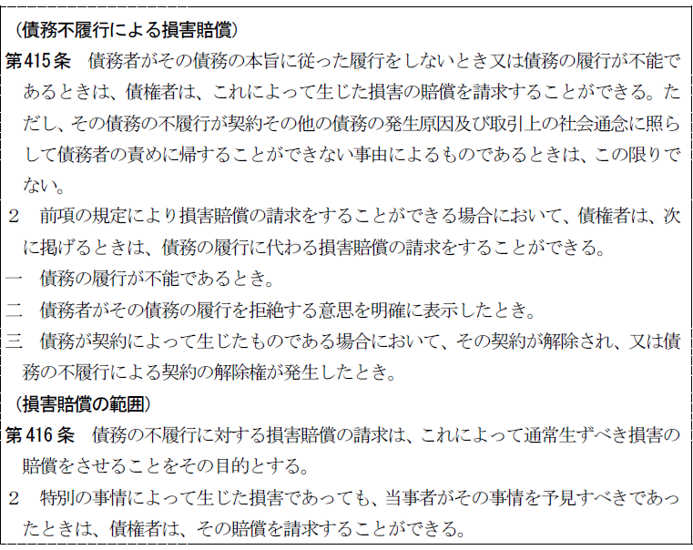
1. 債務者の帰責事由
損害賠償を請求するには、債務者の帰責事由が必要である。
415条1項ただし書の免責事由に該当する場合、債務者は損害賠償責任を負わない。
2. 判断基準
(1) 免責事由に該当するかどうかは、契約当事者の主観的意思のみによって定まるのではなく、契約の性質、契約をした目的、契約締結に至る経緯その他の事情をも考慮して定まる。
(2) 免責事由の具体例
① 人の力による支配・統制を観念することができない自然現象や社会現象
② 洪水、台風、地震、津波、地滑り、火災、伝染病、海難、戦争、大規模騒乱
債務不履行の結果、債権者に損害が生じれば、損害賠償の請求ができる（415条）。しかし、債務不履行から生ずる一切の損害をすべて賠償しなければならないとすると、賠償範囲が際限なく拡大するおそれもある。そこで416条は、賠償すべき損害を合理的な範囲に制限する旨を定めた。
相当因果関係説（大連判大15.５.22・従来の通説）
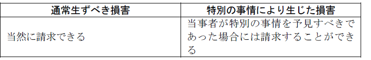
損害賠償が無限に拡大するのを防ぎ、公平の観点から合理的な範囲に制限すべきであるというのが損害賠償制度の趣旨である。
※ 相当因果関係説の趣旨は、不法行為による損害賠償にも当てはまり、本条が類推適用される（富喜丸事件、大連判大15.５.22）。
1. 金銭債務の特則（419条）
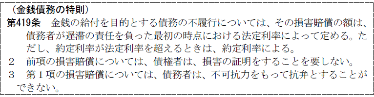
(1) 基準時は「債務者が遅滞の責任を負った最初の時点」である（419条１項本文）。
(2) 債権者は損害賠償を請求するには、損害を証明する必要はない（419条２項）。
(3) 債務者は遅滞が不可抗力によるものでも免責されない（419条３項）。
2. 中間利息の控除（417条の２）
3. 過失相殺（418条）
4. 損害賠償額の予定（420条）
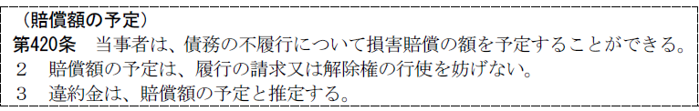
(1) 意義
：当事者間で債務不履行があった場合の損害賠償額をあらかじめ取り決めておくこと
その目的は、損害の発生、及びその額を債権者が立証する面倒を避け、それに絡まる紛争を予防するところにある。
(2) 要件
当事者間の契約による。
(3) 効果
(a) 債権者は債務不履行の事実さえ証明すれば、損害の発生・損害額を証明することなく予定額の賠償請求ができる。
(b) 予定額と実損害が異なっても当事者は増減の請求はできない。ただし、過失相殺はできる（最判平６.４.21・通説）。
なお、裁判所が予定された損害賠償額を増減することはできる。
(c) 損害賠償額の予定は、履行の請求又は解除権の行使を妨げない（420条２項）。
(4) 違約金
違約金は損害賠償額の予定と推定される（420条３項）。
第３節 受領遅滞
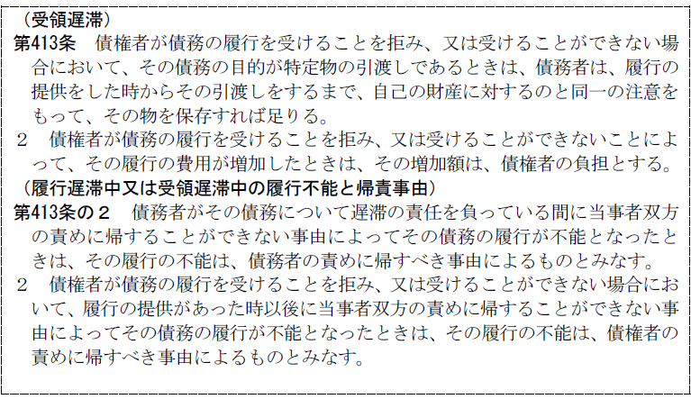
債務者が債務の本旨に従った履行（弁済）の提供をしたにもかかわらず、債権者が必要な協力をしないため、履行が遅延している場合、債務者を保護するため、遅滞の責任を債権者に負わせることにした。
1. 注意義務の軽減
債務の目的が特定物の引渡しであるときには、履行の提供時から、債務者の保管義務が自己の財産に対するのと同一の注意義務に軽減される。
2. 損害賠償請求権の発生
受領遅滞によって履行費用が増加した場合、その増加額は債権者負担となる。
債権者に受領義務があるかは、契約内容による。
受領義務があるのに受領しない場合、受領しないことが債務不履行となるので、債務者からの損害賠償請求が認められることとなる。
第４節 解除
Ⅰ 総説
：契約が締結された後に、その一方当事者の意思表示によって、その契約を解消させる制度
解除権が認められるのは以下の場合である。
1. 契約で解除権を留保した場合（約定解除権）
① 契約で解除権の発生原因について定めている場合
② ある種の契約があると解除権の留保があるものと法律上認める場合
ex．手付の授受
2. 法律の規定で定められている場合（法定解除権）
1. 合意解除（解除契約）
：契約の効力発生後に、両当事者の合意で契約の効力を消滅させるもの
2. 解除条件・失権約款
：一定の事実が発生したときに契約の効力がなくなる旨の特約
条件とされた事実が実現することにより、解除の意思表示を要せず、当然に契約の効力が消滅する。
3. 取消し
：意思表示の瑕疵や制限行為能力を理由として、遡及的に効力を消滅させる旨の意思表示
4. 撤回
：終局的な法律効果を生じていない法律行為や意思表示の効力を、そのまま将来発生しないように阻止すること
Ⅱ 法定解除
債務不履行を理由とする解除は、債務不履行をされた債権者を「契約の拘束力」から解放するための制度であるとされている。従って、債務者の帰責事由は解除の要件とならない。
民法は、解除権発生の要件を、催告による解除（541条）と催告によらない解除（542条）に分けて規定している。
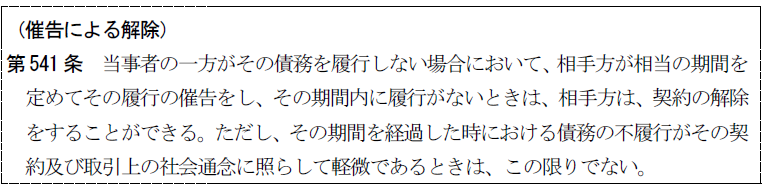
1. 要件（541条本文）
(1) 債務者が債務を履行しないこと
債務を履行しないという債務者の行為が正当化されないものであることが前提となる。とりわけ重要となるのは、双務契約において債務者が同時履行の抗弁権（533条）を有する場合である。
債務者が同時履行の抗弁権を有するときは、債権者は自己の負担する債務につき、履行の提供をしなければならない。
しかし、この履行の提供の時期と程度を厳格に解すると不誠実な債務者に履行を拒む口実を与えることになる。そこで判例は、信義則に従い提供の時期と程度を緩和している。
(a) 確定期限の定めのある債務については債権者がその期限に提供すれば債権者がその後催告するにあたり、提供を必要としない（大判昭３.10.30）。
(b) 期限の定めのない債務（確定期限の定めのある債務につき、当事者双方がその期限に履行の提供をしない場合も同様）については、催告と同時に提供すれば足りる（大判大10.６.30）。
ⅰ 催告の時にいったん提供すれば解除時までにこれを継続する必要はない（大判大３.５.31）。
ⅱ 催告の時でなく、催告に示した相手方の履行すべき時期でもよい（最判昭36.６.22）
(2) 債権者が相当の期間を定めて催告したこと
相当の期間というのは債務者が履行期までに履行の準備をしていることを前提に、その後の履行を完了するのに必要な猶予期間である。
Ｑ では、期間が相当でない場合の催告は無効となってしまうのか。
→ 有効説（大判昭13.８.31、最判昭44.４.15・通説）
催告期間が相当でなくても、相当期間の経過によって解除権が発生する。
(3) 期間内に債務が履行されないこと
催告において定められた相当の期間内に債務者が履行をしなかったことである。
2. 催告解除が認められない場合
(1) 債務の不履行が軽微であるとき（541条ただし書）
催告後相当「期間を経過した時における債務の不履行がその契約及び取引上の社会通念に照らして軽微であるとき」は、債権者は契約を解除できない（541条ただし書）。これにより、債務者としては、債務不履行が軽微なものであることを主張立証すれば、契約の解除を阻止できることとなる。この場合には当該債務不履行により債権者が契約を維持する利益ないし期待を失っていないため、解除権が否定されるのである。
(a) 軽微性の判定時期
解除権発生の障害となるかという観点から、催告期間経過時における不履行が軽微であるか否かを判断すれば足りる。
(b) 軽微性の判定基準
催告期間経過時における債務不履行が軽微であるか否かは、「その契約及び取引上の社会通念に照らして」判断される。
ex．数量的にわずかな部分の不履行でも、その不履行がその契約にとって極めて重大な意味を持つときには、軽微でないと判断されることがある。
(2) 債権者に帰責事由がある場合
債務の不履行が債権者の責めに帰すべき事由によるものであるときは、債権者は、541条及び542条の規定による契約の解除をすることができない（543条）。
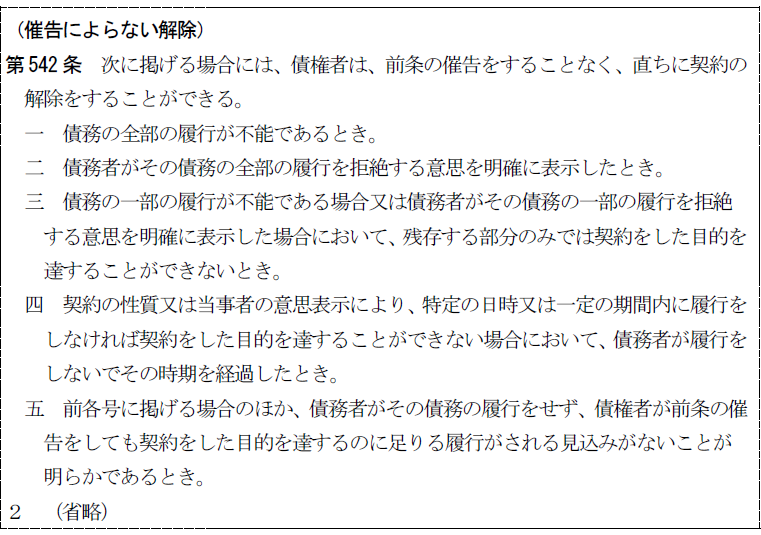
1. 無催告による契約の全部解除が認められる場面（542条１項）
542条１項各号はいずれも、債務不履行によって契約目的の達成が不可能になり、その結果として、当該債務不履行により債権者が契約を維持する利益ないし期待を失っていると評価できる場合であるとされている。
(1) 債務の全部の履行が不能であるとき（１号）
債権者が契約をした目的を達することのできない場合の典型例である。
(2) 債務者がその債務の全部の履行を拒絶する意思を明確に表示したとき（２号）
債務者による履行拒絶が履行期前にされたか、履行期後にされたかは問わない。また、債務者による履行拒絶は確定的なものである必要がある。
(3) 債務の一部の履行が不能である場合又は債務者がその債務の一部の履行を拒絶する意思を明確に表示した場合において、残存する部分のみでは契約をした目的を達することができないとき（３号）
上記(1)又は(2)の事由が債務の一部について生じ、残存する部分のみでは契約した目的を達することができない場合である。
(4) 契約の性質又は当事者の意思表示により、特定の日時又は一定の期間内に履行をしなければ契約をした目的を達することができない場合において、債務者が履行をしないでその時期を経過したとき（４号）
定期行為について催告によらない解除を認めるものである。
(5) 前各号に掲げる場合のほか、債務者がその債務の履行をせず、債権者が前条の催告をしても契約をした目的を達するのに足りる履行がされる見込みがないことが明らかであるとき（５号）
契約目的達成不能を理由とする解除の受け皿となる規定である。とりわけ役務提供型の契約においては、債務の履行が不能であると評価されることは多くないため、重要な意味を持つものと考えられている。
2. 無催告による契約の一部解除（542条２項）
（催告によらない解除）
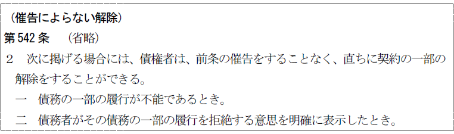
契約の一部解除に関して独立の規定を設けている。債務の内容が数量的に可分である場合、債権者は不能となった部分についてのみ契約の解除ができるという解釈論を確認した規定である。なお、売買契約の目的物である機械の部品に故障があり、当該部分を修理することが不可能である場合など、質的な一部不能の場合には、542条２項が適用されることは想定されていない。この場合は、代金減額請求（563条２項１号）によってほぼ同様の結果を導くことができる。
3. 債権者に帰責事由がある場合
債務の不履行が債権者の責めに帰すべき事由によるものであるときは、債権者は、541条及び542条の規定による契約の解除をすることができない（543条）。
Ⅲ 解除権の行使
1. 解除は相手方に対する意思表示によってなされる（540条１項）。
(1) 相手方
相手方は、契約の当事者若しくはその地位の承継者である。
(2) 解除の性質
解除は単独行為であって、形成権である。単独行為に条件を付すると相手方を著しく不利益な立場に陥れるから、解除の意思表示に条件を付することは許されないのが原則である。
もっとも、催告と同時に、催告期間内に適法な履行のなされないことを停止条件とする解除の意思表示をすることは許される。相手方を著しく不利益な立場に陥れるものではないからである。
2. いったんした解除の意思表示は撤回することができない（540条２項）。
相手方の承諾があれば撤回できるが、その効果は第三者に対抗できない（通説）。
1. 解除権不可分の原則（544条１項）
(1) 意義
契約の一方又は双方の当事者が複数あるときは、その全員から又は全員に対して、解除の意思表示をしなければならない。これを解除不可分の原則という。契約の当事者が複数の場合、各自の負担部分に応じた解除を認めると法律関係が複雑になるからである。
(2) 行使
解除の意思表示は全員同時にする必要はなく、最後の者の意思表示によって解除の効力が生じる（大判大12.６.１）。
(3) 適用範囲
共有者が共有物を目的とする賃貸借契約を解除するときは、252条１項本文により共有者の過半数で解除でき、本条の適用はない（最判昭39.２.25）。
(4) 任意規定
本条は強行規定ではないので、当事者全員で各自別々に解除できる旨の特約をすることはできる。
2. 消滅における不可分性（544条２項）
当事者の中の１人について解除権が消滅したときは、他の者についても消滅する。例えば、複数の解除権者の１人が解除権を放棄すれば、全員について解除権は消滅する。一部の当事者についてのみ解除の効果を認めると、法律関係が複雑になるからである。
複数の解除権者の１人がもつ解除権が消滅した場合の他、複数の相手方の１人に対する解除権が消滅した場合にも適用される。
Ⅳ 解除の効果
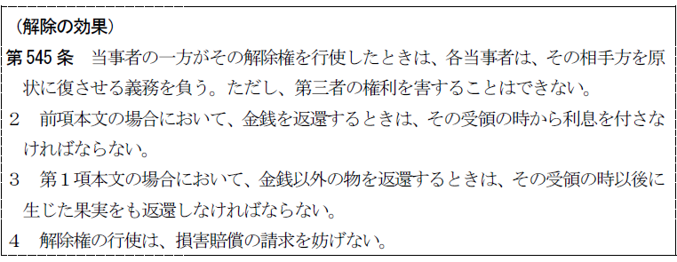
1. 解除により、明文上、以下の効果が認められる。
① 未履行の給付は履行しなくてもよい（545条１項の前提）。
② 既履行の給付は返還しなければならない（原状回復義務・545条１項本文）。金銭を返還すべき場合には、受領のときから利息を付けなければならない（545条２項）。また、解除によって金銭以外の物を返還する際は果実を返還しなければならない（545条３項）。
③ 解除の原因となった契約の債務不履行に基づく損害については、その賠償を請求できる（545条４項）。
2. 解除の法的性質
Ｑ 解除の法的性質については、民法に直接これを規定する条文は存在しない。そこで、解除の法的構成をいかに解するかについて争いがある。
Ａ 直接効果説（大判大７.４.13等・通説）
解除によって契約は当初から存在しなかったことになり、契約から生じた効果は遡及的に消滅する。その結果、未履行の債務は消滅し、既履行の給付は法律上の原因を失う。従って、原状回復義務は不当利得返還義務にほかならない。ただ、返還義務の範囲が現存利益の返還（703条）から原状回復にまで拡大されているにすぎない。
この見解の特徴をまとめると以下のとおりである。
① 未履行債務については当然にその履行義務を免れる。
② 既履行債務は、契約上の債権・債務の遡及的消滅によって法律上の原因を欠く給付となり、受領者は不当利得の性質をもつ原状回復義務を負う。
③ 545条は、解除制度の目的に適合するように、返還義務の範囲を現存利益の返還（703条）ではなく原状回復義務にまで拡大し（545条１項本文）、また、第三者を保護するため（545条１項ただし書）、及び損害賠償を併存させるため（545条４項）、遡及効を制限した特則である。
Ｂ 間接効果説
解除は、その直接の効果として契約を遡及的に消滅させるのではなく、ただ、契約が初めから存在しなかったと同様の状態（原状）に戻す義務（原状回復の債権・債務関係）を発生させるにすぎない。その原状回復義務が履行されることによって初めて契約関係は消滅する。
この見解の特徴をまとめると以下のとおりである。
① 未履行債務については履行拒絶の抗弁権を生ずる。
② 既履行の給付については解除時から返還債務が生ずる。
③ 解除の直接の効果は遡及的消滅ではなくて原状回復義務の発生であり、545条１項ただし書や４項は当然のことを注意的に規定したにすぎない。解除による原状回復は直接効果説と異なって、不当利得とは何ら関係のないことになる。
Ｃ 折衷説
解除は将来に向かって債権・債務を消滅させる（非遡及効）。
この見解の特徴をまとめると以下のとおりである。
① 未履行債務は解除時に、将来に向かって消滅する（非遡及効）。
② 既履行の給付については解除時から返還債務が生ずる（間接効果説と同じ）。
③ 545条１項ただし書や４項は当然のことを注意的に規定したにすぎない。解除による原状回復は直接効果説と異なって、不当利得とは何ら関係のないことになる（間接効果説と同じ）。
※ 未履行の給付については履行請求が認められず、既履行のものは元に戻す義務があり、さらに損害があれば損害賠償も請求できるという解除の具体的な効果自体については、どの説からも異論はなく、大差ない。結局、各説の対立は、理論構成の仕方の違いである。
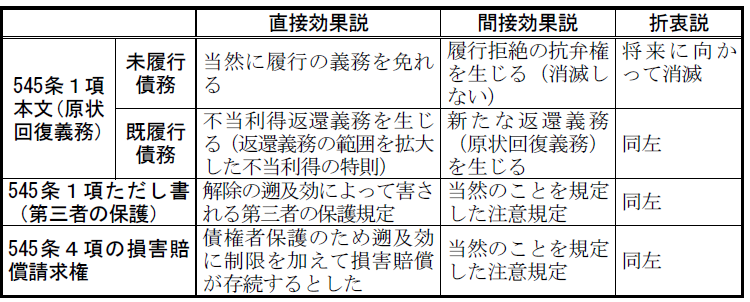
※ 以下の解説は、判例・通説である直接効果説を前提とする。
Ｑ 損害賠償の範囲が問題となる。
→ 履行利益の賠償（最判昭28.12.18・通説）
元の契約が双務契約の場合、同時履行関係を解除後にも貫くことが公平と考えられることから、原状回復の債権債務も同時履行の関係に立つことを規定した。
Ⅴ 解除権の消滅
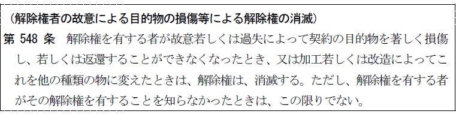
解除権の行使について期間の定めがないときは、相手方は、解除権者に対し、相当の期間を定めて、その期間内に解除をするかどうかを確答すべき旨を催告することができ、その期間内に解除の通知を受けないときは、解除権は消滅する（547条）。
解除権について期間の定めがないと、相手方はいつまでも解除されるかどうかわからない不安定な状態に置かれることになる。そこで547条は、約定解除・法定解除を問わず相手方を保護するため、催告による解除権の消滅を定めた。
解除権者が故意若しくは過失により契約の目的物を著しく損傷し、若しくは返還できなくなったとき、又は加工・改造によりこれを他の種類の物に変えたときは、解除権は消滅する（548条本文）。
548条は、原物が返還不能な場合でも価格による返還は可能であるが、解除権を有する者が自らの故意・過失により原物を返還不能にしておきながら、解除権を行使することは信義則に反するため解除権が消滅するとしたものである。「ただし、解除権を有する者がその解除権を有することを知らなかったときは、この限りでない。」（548条ただし書）とする。
解除権は、債務不履行時から短期５年・長期10年で時効消滅し、その期間内に解除されると、原状回復請求権及び損害賠償請求権（原状回復義務の履行不能による）は、解除時から短期５年・長期10年で時効消滅する（166条１項）。
第５節 危険負担
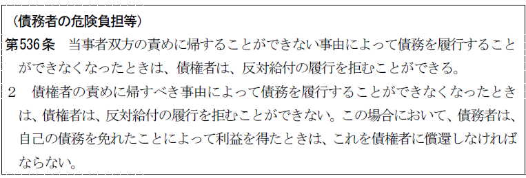
1. 意義
危険負担とは、双務契約において、一方の債務が履行不能（原始的不能を含む）である場合に、債権者は反対債務の履行を拒絶することができるか、という問題である。
原始的不能であったとしても履行不能により生じた債務不履行による損害賠償の請求が妨げられないと規定され（412条の２第２項）、原始的不能によって契約が当然に無効となるわけではない。そこで、原始的不能であっても危険負担の規律を及ぼし得るとされている。
2. わが民法の態度
民法は、一方の債務が履行不能であっても、債務が消滅するのではなく、双務契約において、一方の債務が履行不能である場合に、債権者は反対債務の履行を拒絶することができるか否かという観点から、危険負担の制度を採用している。
1. 反対債務の履行拒絶権
双務契約において、一方の債務が履行不能である場合、債権者は、債務者からの反対債務の履行請求に対して、履行不能を理由としてその履行を拒むことができる（536条１項）。
履行不能には、後発的不能のみならず、原始的不能をも含まれる（412条の２参照）。
2. 根拠
双務契約において一方の債務が履行不能である場合に、反対債務について債権者に履行拒絶権を与えるのが履行面での均衡を保障する上で妥当である。
3. 効果
債権者は反対債務の履行を拒むことができるだけであって、反対債務が「消滅」するものではない。
反対債務を「消滅」させるためには、債権者は、履行不能を理由として契約を解除する必要がある（542条）。
債務・反対債務の履行上の牽連性を度外視しても、債権者が反対債務の履行を拒むことができないとするのが適切な場合に例外が認められる。
1. 債権者の責めに帰すべき事由による履行不能（536条２項）
(1) 趣旨
債権者の責めに帰すべき事由によって不能が生じた場合にも債務者に危険を負担させるのでは公平に反することから、履行拒絶権を否定することを規定した。
(2) 効果
債権者は、債務者からの反対債務の履行請求に対して、その履行を拒むことができない（536条２項前段）。しかも、債権者は、履行不能を理由として契約を解除することもできない（543条）。
ただし、債務者は、自己の債務を免れたことにより利益を得たときは、これを債権者に償還しなければならない（536条２項後段）。
2． 受領遅滞中に、債務者の責めに帰することができない事由によって、債務の履行が不能となった場合（413条の２第２項）
受領遅滞に陥っている間に、債務者の責めに帰することができない事由により債務の履行が不能となった場合、その履行不能は、「債権者の責めに帰すべき事由によるものとみなす。」（413条の２第２項）。
その結果、①債権者は契約を解除することができないし（543条）、双務契約においては、反対債務の履行を拒むことができない（536条２項前段）。